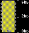
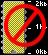

SDI V.1.03J ED3DC6CD |
 |
SDI V.1.0 F5B469C9 |
|
SDI V.1.0 wrong typing D0678A71 |
 |
Magazine MOJ Mikro Serbo-Croatian |
|
Magazine MOJ Mikro Slovenian |
|
Tomaz guide and translation |
|
English translation for part 3 with commands |
|
SDI Scheme by Mario Prato |
Ace of Aces |
|
Buggy Boy 48 / 128 |